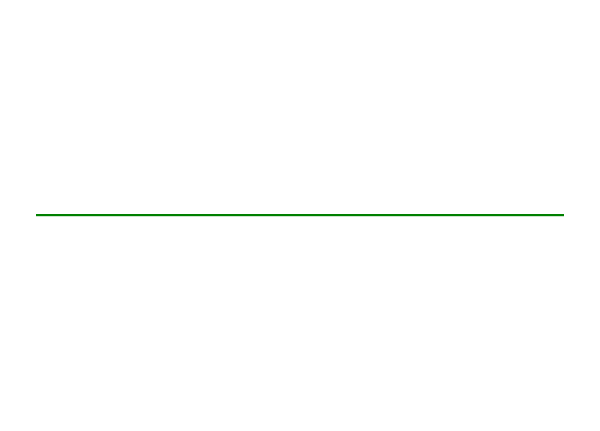
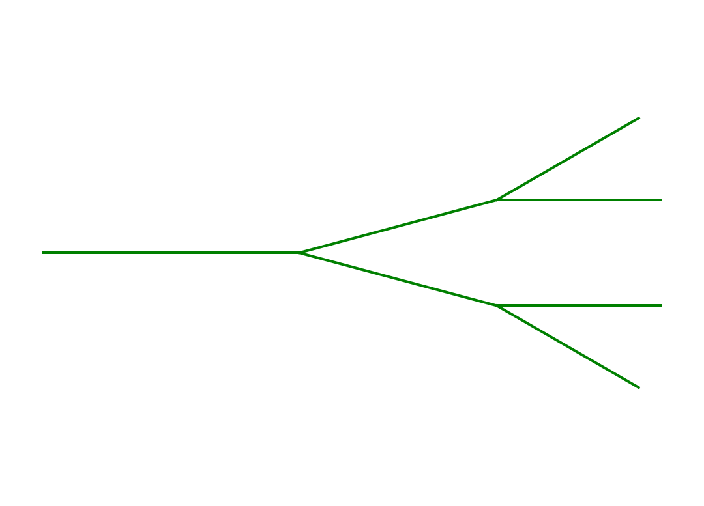
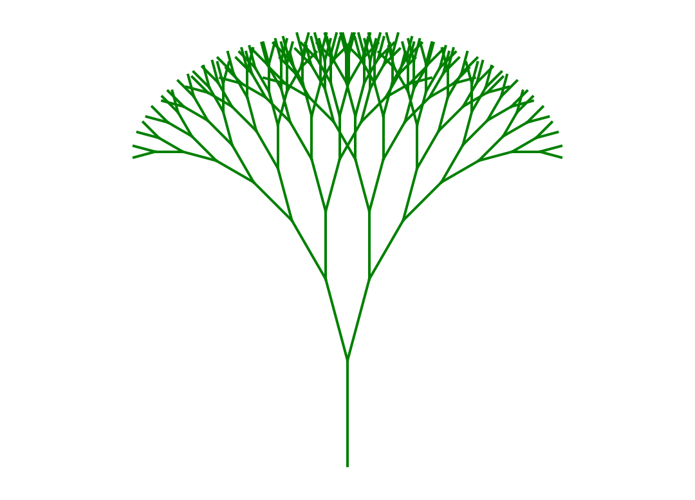
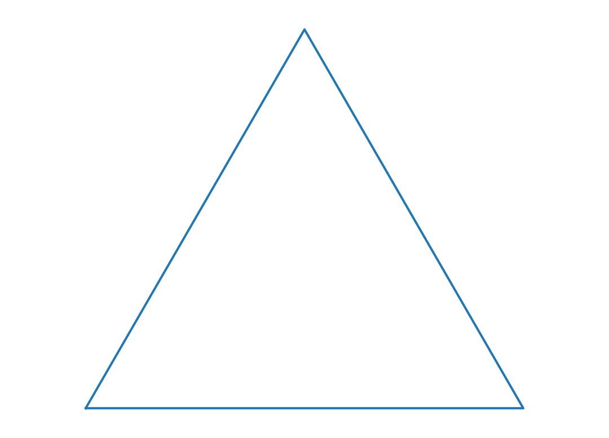
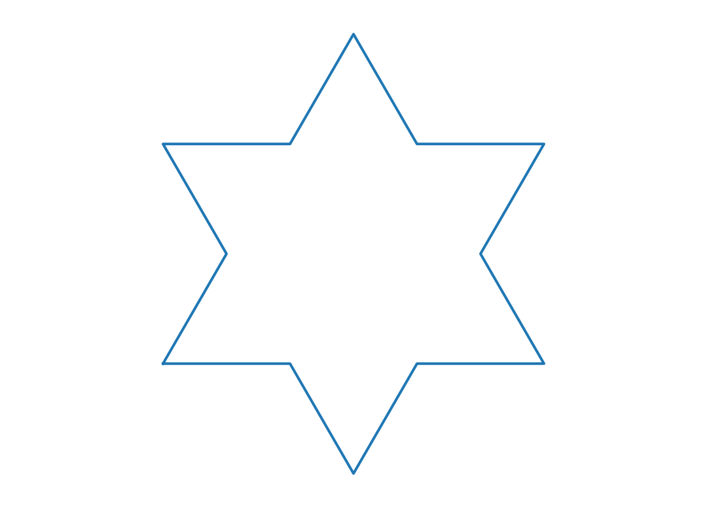
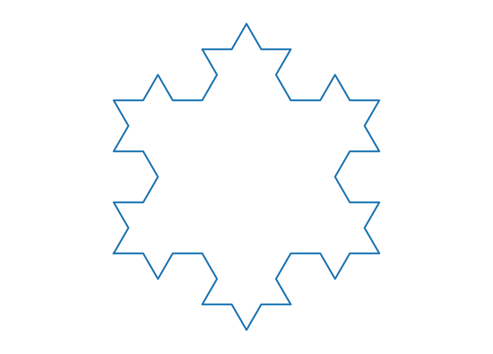
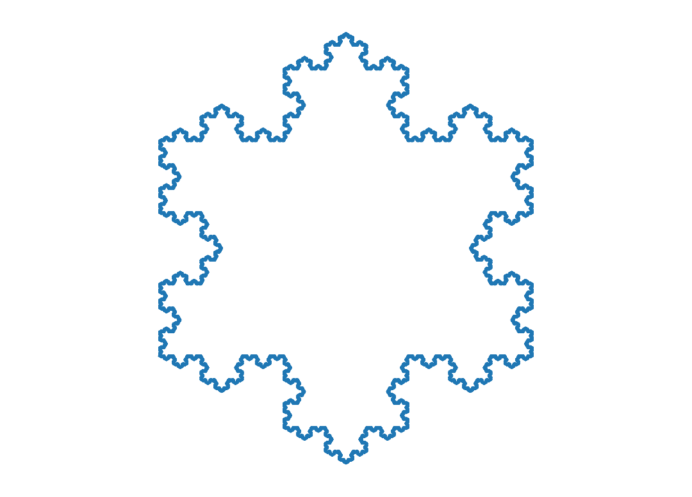

def factorielle(n):
if n == 0: # Condition d'arrêt
return 1
else:
return n * factorielle(n - 1)Récursivité
Une fonction est dite récursive si elle fait appel à elle-même dans sa définition. La récursivité est un outil puissant pour définir des fonctions de manière élégante et concise. Cependant, il est important de veiller à ce que les fonctions récursives soient bien définies, c’est-à-dire qu’elles doivent comporter une condition d’arrêt pour éviter les appels infinis.
Un exemple classique de fonction récursive est la fonction de calcul de la factorielle d’un nombre entier naturel \(n\), notée \(n!\). La factorielle de \(n\) peut être définie par récurrence par la relation :
\[n! = \begin{cases} 1 & \text{si } n = 0 \\ n \cdot (n-1)! & \text{si } n \geq 1 \end{cases} \]
On peut alors proposer la fonction suivante pour calculer la factorielle d’un nombre entier naturel.
factorielle(5)120Attention, si on oublie la condition d’arrêt, la fonction suivante est également récursive mais elle n’est pas bien définie.
def factorielle(n):
return n * factorielle(n - 1)On peut alors constater que l’appel de cette fonction avec un entier naturel quelconque entraîne une erreur en raison d’appels récursifs infinis.
factorielle(5)--------------------------------------------------------------------------- RecursionError Traceback (most recent call last) Cell In[164], line 1 ----> 1 factorielle(5) Cell In[163], line 2, in factorielle(n) 1 def factorielle(n): ----> 2 return n * factorielle(n - 1) Cell In[163], line 2, in factorielle(n) 1 def factorielle(n): ----> 2 return n * factorielle(n - 1) [... skipping similar frames: factorielle at line 2 (2975 times)] Cell In[163], line 2, in factorielle(n) 1 def factorielle(n): ----> 2 return n * factorielle(n - 1) RecursionError: maximum recursion depth exceeded
Algorithmes dichotomiques
Recherche dans un tableau trié
def recherche_dicho(tab, elt):
if len(tab) == 0:
return False
m = len(tab) // 2
if elt < tab[m]:
return recherche_dicho(tab[:m], elt)
elif elt > tab[m]:
return recherche_dicho(tab[m + 1 :], elt)
else:
return Truerecherche_dicho([2, 3, 5, 9, 10, 11, 13], 11)Truerecherche_dicho([2, 3, 5, 9, 10, 11, 13], 4)Falsedef indice_dicho(tab, elt):
if len(tab) == 0:
return None
m = len(tab) // 2
if elt < tab[m]:
return indice_dicho(tab[:m], elt)
elif elt > tab[m]:
ind = indice_dicho(tab[m + 1 :], elt)
return None if ind == None else m + 1 + ind
else:
return mindice_dicho([2, 3, 5, 9, 10, 11, 13], 11)5print(indice_dicho([2, 3, 5, 9, 10, 11, 13], 4))NoneExponentiation rapide
def exponentiation_rapide(x, n):
if n == 0:
return 1
elif n % 2 == 1:
return x * exponentiation_rapide(x**2, n // 2)
else:
return exponentiation_rapide(x**2, n // 2)exponentiation_rapide(2, 10)1024Permutations et sous-listes d’une liste
Permutations d’une liste
def permutations(liste):
if len(liste) == 0:
return [[]]
perms = []
for i in range(len(liste)):
perms.extend([[liste[i]] + p for p in permutations(liste[:i] + liste[i + 1 :])])
return permspermutations(['a', 'b', 'c', 'd'])[['a', 'b', 'c', 'd'],
['a', 'b', 'd', 'c'],
['a', 'c', 'b', 'd'],
['a', 'c', 'd', 'b'],
['a', 'd', 'b', 'c'],
['a', 'd', 'c', 'b'],
['b', 'a', 'c', 'd'],
['b', 'a', 'd', 'c'],
['b', 'c', 'a', 'd'],
['b', 'c', 'd', 'a'],
['b', 'd', 'a', 'c'],
['b', 'd', 'c', 'a'],
['c', 'a', 'b', 'd'],
['c', 'a', 'd', 'b'],
['c', 'b', 'a', 'd'],
['c', 'b', 'd', 'a'],
['c', 'd', 'a', 'b'],
['c', 'd', 'b', 'a'],
['d', 'a', 'b', 'c'],
['d', 'a', 'c', 'b'],
['d', 'b', 'a', 'c'],
['d', 'b', 'c', 'a'],
['d', 'c', 'a', 'b'],
['d', 'c', 'b', 'a']]Sous-listes d’une liste
def souslistes(liste):
if len(liste) == 0:
return [[]]
sl = souslistes(liste[:-1])
sl.extend([l + [liste[-1]] for l in sl])
return slsouslistes(['a', 'b', 'c', 'd'])[[],
['a'],
['b'],
['a', 'b'],
['c'],
['a', 'c'],
['b', 'c'],
['a', 'b', 'c'],
['d'],
['a', 'd'],
['b', 'd'],
['a', 'b', 'd'],
['c', 'd'],
['a', 'c', 'd'],
['b', 'c', 'd'],
['a', 'b', 'c', 'd']]PGCD
def pgcd(a, b):
if b == 0:
return a
return pgcd(b, a % b)pgcd(10, 24), pgcd(70, 98)(2, 14)Fractales
Arbres fractaux
from math import cos, sin, pi
import matplotlib.pyplot as plt
dangle = pi / 12
echelle = 0.8
def get_fin(branche):
origine, angle, longueur = branche
return origine[0] + longueur * cos(angle), origine[1] + longueur * sin(angle)
def get_fils(branche):
origine, angle, longueur = branche
fin = get_fin(branche)
return (fin, angle - dangle, longueur * echelle), (
fin,
angle + dangle,
longueur * echelle,
)
def trace_branche(branche):
origine, _, _ = branche
fin = get_fin(branche)
plt.plot([origine[0], fin[0]], [origine[1], fin[1]], color="g")
def trace_arbre(arbre, level):
if level == 0:
return
trace_branche(arbre)
arbre1, arbre2 = get_fils(arbre)
trace_arbre(arbre1, level - 1)
trace_arbre(arbre2, level - 1)plt.axis("equal")
plt.axis("off")
a = ((0, 0), 0, 1)
trace_arbre(a, 1)
plt.axis("equal")
plt.axis("off")
a = ((0, 0), 0, 1)
trace_arbre(a, 3)
plt.axis("equal")
plt.axis("off")
a = ((0, 0), pi / 2, 1)
trace_arbre(a, 8)
Flocon de Koch
from math import pi
from cmath import exp
import matplotlib.pyplot as plt
def step(p1, p2):
l = (p2 - p1) / 3
pp1 = p1
pp2 = pp1 + l
pp3 = pp2 + l * exp(-1j * pi / 3)
pp4 = pp3 + l * exp(1j * pi / 3)
return [pp1, pp2, pp3, pp4]
def recur(pts, level):
if level == 0:
return pts
pts += [pts[0]]
pairs = zip(pts[:-1], pts[1:])
return recur([pp for p in pairs for pp in step(p[0], p[1])], level - 1)
def trace(pts):
pp = pts + [pts[0]]
plt.plot([p.real for p in pp], [p.imag for p in pp])
def koch(level):
pts = [0, 1, exp(1j * pi / 3)]
pts = recur(pts, level)
trace(pts)plt.axis("equal")
plt.axis("off")
koch(0)
plt.axis("equal")
plt.axis("off")
koch(1)
plt.axis("equal")
plt.axis("off")
koch(2)
plt.axis("equal")
plt.axis("off")
koch(10)